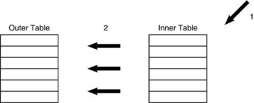
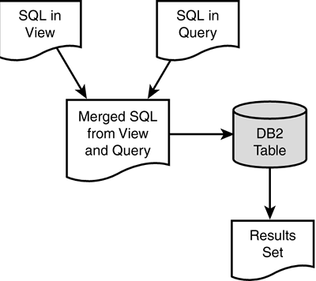
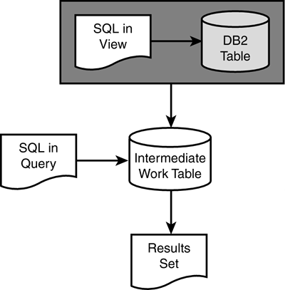

|
|
< Day Day Up > |
|
Other Operations Performed by the OptimizerSo far, you have learned about sequential access methods, indexed access methods, and join methods. The optimizer can perform other operations as well. For example, using a feature known as predicate transitive closure, the optimizer can make a performance decision to satisfy a query using a predicate that isn't even coded in the SQL statement being optimized. Consider the following SQL statements:
SELECT D.DEPTNAME, E.LASTNAME
FROM DSN8810.DEPT D,
DSN8810.EMP E
WHERE D.DEPTNO = E.WORKDEPT
AND D.DEPTNO = 'A00'
and
SELECT D.DEPTNAME, E.LASTNAME
FROM DSN8810.DEPT D,
DSN8810.EMP E
WHERE D.DEPTNO = E.WORKDEPT
AND E.WORKDEPT = 'A00'
These two statements are functionally equivalent. Because DEPTNO and WORKDEPT are always equal, you could specify either column in the second predicate. The query is usually more efficient, however, if the predicate is applied to the larger of the two tables (in this case, DSN8810.DEPT), thereby reducing the number of qualifying rows. With predicate transitive closure, the programmer doesn't have to worry about this factor. DB2 considers the access path for both columns regardless of which is coded in the predicate. Therefore, DB2 can optimize a query based on predicates that are not even coded by the programmer. Predicate transitive closure is not performed on every type of predicate. The IN and LIKE predicates are excluded from predicate transitive closure. The DB2 optimizer is currently not capable of determining when predicate transitive closure could be useful for the IN and LIKE predicates. SubqueriesThe DB2 optimizer also is responsible for generating optimized access paths for subqueries. Remember from Chapter 1 that there are two types of subqueries: non-correlated and correlated. The type of subquery determines the type of access path that DB2 chooses. The access path for a non-correlated subquery always processes the subselect first. This type of processing is called inside-out subquery access. The table in the subselect is the inner table and is processed first. The table in the outer SELECT is the outer table and is processed last, hence the name inside-out processing. Consider the following subquery:
SELECT LASTNAME
FROM DSN8810.EMP
WHERE WORKDEPT IN
(SELECT DEPTNO
FROM DSN8810.DEPT
WHERE DEPTNAME = 'OPERATIONS');
The access path formulated by the optimizer for a non-correlated subquery is shown in Figure 21.27. Figure 21.27. A non-correlated subquery. The access path for a non-correlated subquery consists of the following steps:
A correlated subquery, on the other hand, is performed using outside-in-outside subquery access. Consider the following correlated subquery:
SELECT LASTNAME, SALARY
FROM DSN8810.EMP E
WHERE EXISTS
(SELECT 1
FROM DSN8810.EMPPROJACT P
WHERE P.EMPNO = E.EMPNO);
The access path formulated by the optimizer for this correlated subquery consists of the following steps:
Some further notes on subqueries follow. In general, the subselect portion of a correlated subquery is reevaluated for each qualifying outer row. However, if the subquery returns a single value, it can be saved in an intermediate work area such that it need not be reevaluated for every qualifying outer table row. An example of a correlated subquery where this is possible follows:
SELECT LASTNAME
FROM DSN8810.EMP E1
WHERE SALARY <
(SELECT AVG(SALARY)
FROM DSN8810.EMP E2
WHERE E1.WORKDEPT = E2.WORKDEPT)
One average salary value is returned for each department. Thus, only a single inner table evaluation is required for each department, instead of a continual reevaluation for each qualifying outer table row. Although subqueries are often the most obvious way to access data from multiple tables, they might not be the most efficient. A good rule of thumb is to recode subqueries as joins and perform tests to determine which formulation provides better performance results. The DB2 optimizer may choose more efficient access paths for joins than for subqueries. For example, the following query
SELECT LASTNAME, SALARY
FROM DSN8810.EMP
WHERE WORKDEPT IN
(SELECT DEPTNO
FROM DSN8810.DEPT
WHERE ADMRDEPT = 'A00')
can be recoded as a join:
SELECT E.LASTNAME, E.SALARY
FROM DSN8810.EMP E,
DSN8810.DEPT D
WHERE E.WORKDEPT = D.DEPTNO
AND D.ADMRDEPT = 'A00'
One final type of operation that can be performed by the optimizer is the optimization of queries based on views. DB2 employs one of two methods when accessing data in views: view merge or view materialization. View merge is the more efficient of the two methods. Using this technique, DB2 will merge the SQL in the view DDL with the SQL accessing the view. The merged SQL is then used to formulate an access path against the base tables in the views. This process is depicted in Figure 21.29. Figure 21.29. View merge. View materialization is chosen when DB2 determines that it is not possible to merge the SQL in the view DDL with the SQL accessing the view. Instead of combining the two SQL statements into a single statement, view materialization creates an intermediate work table using the view SQL and then executes the SELECT from the view against the temporary table. Figure 21.30 outlines the view materialization process. Figure 21.30. View materialization. Consult Table 21.7 to determine the circumstances under which view materialization is used instead of view merge. If the SELECT from the view contains any of the components listed in the left column, combined with the view DDL containing any of the components listed along the top, analyze the column entry in the table. MAT represents view materialization; MER represents view merge. If the view SELECT/view DDL combination does not appear in the table, view merge will be used. This table applies to table expressions as well as views.
NOTE
| |||||||||||||||||||||||||||||||||||||||||||||||||||||||||||||||||
|
|
< Day Day Up > |
|